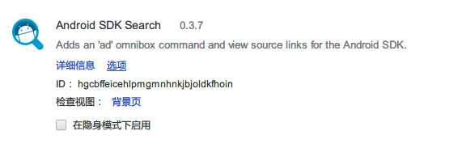

前面吐槽了 有没有必要阅读Android源码，后面觉得只吐槽不太好，还是应该多少弄点干货。需要说明的是，Android每个系统版本的源码都会有变动，而且代码中时不时Java和Native互相穿插，追求完全看透源码意义不大，把目的定在“理解代码设计的思路，弄清各个生命周期方法调用的顺序”比较实际。
IDE是日常经常用的东西，Eclipse就不说了，直接从Android Studio（基于IntelliJ Community版本改造）开始。
我们平时的Android项目，都是要依赖Android SDK里对应API Level的android.jar包（而且是以Provided的形式依赖），这样才能使用Android提供的API。在IntelliJ中，当想要看具体类的源码的时候，如果Android SDK里对应API Level的Source包有下载的话，IDE会打开对应的Source包；如果还没有下载，IDE会把对应API Level的android.jar包反编译成Java代码，这个规则对于一些第三方的开源项目也一样。推荐下载Source源码，毕竟反编译的Java代码不可能完全和源码的时候一样，有时候反编译出来的代码的执行逻辑可能完全等价，但是可阅读性下降了不好，而且也少了一些重要的注释。
定位具体源码的时候，可以通过“Ctrl+鼠标左键”来查看，也可以通过“双击Shift”，在查找框里输入目标类的名字来定位。
如上图，第一个类就是API23的NinePatchDrawable的源码，第二个就是通过android.jar反编译而来的，这里记得把“Include non-project items”勾上。
Android SDK自带的Source源码包很小，并没有包括所有的Android Framework的源码，仅仅提供给应用开发参考用，一些比较少用的系统类的源码并没有给出，所以有时候你会看到如下。
|
|
“RuntimeException(“Stub!”)”表示实际运行时的逻辑会由Android ROM里面相同的类代替执行。
此外，在IDE里看源码的时候，有时候一些方法或者类会出现报红（找不到）的情况，如下。
这是因为这些方法或者类是被Android SDK隐藏的，出于安全或者某些原因，这些API不能暴露给应用层的开发者，所以编译完成的android.jar包里会把这些API隐藏掉，而我们的Android项目是依赖android.jar的，查看源码的时候，IDE会自动去android.jar找对应的API，自然会找不到。当然，这些API在ROM中是实际存在的，有些开发者发现了一些可以修改系统行为的隐藏API，在应用层通过反射的方式强行调用这些API执行系统功能，这种手段也是一种HACK。
当你需要的源码在Android SDK Source中找不到的时候，就有必要去AOSP（Android Open Source Project）项目里面找了。
不过AOSP项目包括整个Android所有开源的东西，实在是太庞大了，对于一般开发者来说，我们只需要接触Framework层次的东西就够了，这里包括了base、build-tools、support包甚至Volley项目的源码。
以base为例，进入base目录，能看到base项目的git仓库，左边是其所有的分支。
进入“master/core/java/android/”路径就能看到熟悉的Package目录了，其他分支以及项目都类似。有必要的时候可以把整个AOSP项目Clone下来，大概20G左右，可以把项目导入到IDE里面，这样就更方便查看源码了，另外可以可是试着编译自己的Android ROM，只需要部署能够跑MakeFile命令的环境就好。
Android SDK Search

相信平时到 Android开发者官网 查看API说明的人不少，这个扩展可以在API类名旁边显示一个跳转链接，用于跳转到AOSP中对应的类的源码，方便查看源码。
在这个工具帮助下，你才可以驾驭巨大数量的Android 源码，你可以从容在Java，C++,C代码间遨游，你可以很快找到你需要的继承和调用关系。
善用梯子是开发者基本的自我修养之一，如果你不想做“面向百度编程”的话。
我在一开始是使用免费的GoAgent和WallProxy，但是经常要更新，而且最近还要经常替换IP才能工作，所以后来我换成了收费的ShadowSocks，各个平台都有客户端，非常方便，我也在手机上常态用起了Google的全家桶，只不过最近老是更换服务器地址，而且部分服务器不稳定，非常担心商家是否准备捞一笔然后跑路，23333。
我觉得比起折腾找免费的低速、不稳定的梯子，还是用一些稳定的收费的的梯子比较划算。至于具体的用梯子的姿势，请诸位自行搜索，这里随便贴个介绍 梯子使用总结。
AOSP项目这么庞大，就算是Framework部分也有够看上一阵子的，所以推荐从常用的看起，由浅及深，同时向横向和纵向深入阅读。
Handler-Message-Looper
Handler被称为“异步提交器”，是Android开发入门教程必定谈及的东西，这也是Activity等组件的工作机制需要用到的东西，是“数据驱动”框架的重要组成，作为阅读源码的入门最适合不过。
Activity和Service
作为经常使用到的组件，阅读其源码的花费和带来的技术提高的性价比肯定是最高的，Service可以不看，但是Activity总不能少吧。
Fragment
还在认为Fragment是一个视图吗，还在认为FragmentActivity的界面有多个Fragment组成吗，看看Fragment和FragmentManager吧，了解下生命周期的本质到底是什么。
View
想自定义高级的View类吗，那总得知道onMeasure/onLayout/onDraw这些方法是怎么被调用的，了解LayoutParams是怎么工作的，知道调用requestLayout和Invalidate的时候有什么区别。
MotionEvent
在懂的怎么自定义高级的View后，只能向用户显示界面，还得知道怎么与用户交互才能做出华丽的UI。所以必须知道TouchEvent的分发和拦截的工作机制，起码也得知道其特点，才不会一直在困扰“为什么无法监听用户的触摸事件”、“View之间的触摸事件冲突了”或者“View的滑动与点击事件冲突了”之类的问题。
LayoutInflator
布局渲染器也是开发Android UI的时候经常用到的，不过LayoutInflator实例的创建方式有好几种，你至少得知道其之间的区别。还有，LayoutInflator在渲染指定布局的时候，有container和attachToRoot等参数，阅读源码后很快能了解其区别。
SurfaceView和TextureView
阅读完View的工作机制后，就能理解为什么View在绘制复杂的UI效果时效率这么低，这时候就需要SurfaceView和TextureView了。理解双缓冲对UI更新效率的帮助，了解SurfaceView在视图叠加的时候的缺陷，了解TextureView在Android Lollipop之前的内容窜台BUG，才能用正确姿势使用这俩。
AsyncTask
异步任务也是Android开发经常遇到的问题，相比自己从Thread和Handler写起，被称为“异步任务大师”的AsyncTask类自然更受到许多小伙伴的喜欢。不过AsyncTask在早期的Android版本中差别甚大，需要做大量的适配工作，而且特别容易引起异步任务引用着组件的实例导致内存泄露从而引发OOM问题，所以不推荐直接使用AsyncTask类，不过强烈推荐阅读AsyncTask的源码学习Google优秀的异步任务设计理念。此外，如果真的要使用AsyncTask，不要直接使用系统提供的AsyncTask类，AsyncTask本身就是一个单一的Java类，没有耦合其他系统类，推荐自己从最新的Android版本中复制一份AsyncTask类的代码，自己维护，在项目中当做Support包一样使用，以规避其兼容性问题。
Volley
这个强烈推荐，是Google官方的异步任务框架，没有随Android发布，需要自己在Framework里下载代码。Volley的中文意思就是“并发”，阅读其源码能让你见识到原来异步任务框架也能写得这么低耦合和高扩扩展，其用“生产者-消费者”模式来处理异步请求的框架会让人拍案叫绝。此外，Volley框架是用于处理Http任务和Image加载任务，但是其优秀的异步控制思想也能运用与File、Sqlite等耗时任务的处理，当你能够自己写出类似Volley框架的代码时，说明你的Android技术已经有所突破。
android.util.*
“android.util.*” 包名下有许多优秀的实用类，大多是作为Java自带类的补充，比如数据结构类的SparseArray、ArrayMap、ArraySet，用于加密的Base64，用于处理屏幕分辨率自适应的DisplayMetrics和TypedValue，用于时间换算的TimeUtils，以及用于内存缓存的LruCache，熟悉这些类对Android开发非常有帮助，也会让代码显得成熟。
Context
阅读Context源码能帮助我们了解其工作机制，了解Google是怎么在Java代码上添加Android特性的，了解Android是怎么保存和获取res资源的，了解ContextWrapper和Activity这些Context有什么区别，了解Context设计的装饰者模式（Description Pattern）。
ClassLoader
类加载器ClassLoader是Android虚拟机工作的基础，了解其“双亲代理模式”能让你更好的了解系统的类和你写的类是怎么工作的。Multi-Dex和ART模式也和ClassLoader的工作机制息息相关。
Binder
Binder是Android上RPC（Remote Procedure Call Protocol）的实现，Android系统许多功能就是居于Binder实现的，平时应用层对Binder的使用大多是在于和Service通讯的时候，不过，当我们需要使用AIDL功能的时候，就需要接触到Binder了。（推荐阅读原理即可，反正C++驱动层我是看不下去了）
WMS，AMS，PMS，NMS，IMS等系统Service
SystemServer是Android的Framework层工作的核心，Android系统启动过程包含从Linux内核加载到Home应用程序启动的整个过程。SystemServer是Zygnote孵化的第一个进程，这个进程会启动许多Framework层功能需要用到的线程，比如用于管理窗口的WindowManagerService，用于管理Activity的ActivityManagerService，用于管理APK包信息的PackageManagerService，用于管理网络的NetworkManager，用于处理用户触摸的InputManagerService等，这些系统Service提供了APP运行时需要的大多系统功能，大多使用“stub-server”的模式进行交互，而且有大量的JNI的调用。这部分的源码比较适合从事ROM开发的人阅读，应用层的开发基本不会用到，但是这方面的只是能让我们对Android Framework层的工作机制有个大抵的认识。（非常惭愧，这部分我自己看了几次，还是没能产生融会贯通的感觉，整体的认识还是比较模糊，希望继续跟着老罗的博客，捡捡肉吃）
EventBus
Android上的一个“订阅者-发布者”模式的实现框架，非常适合业务多而且经常变动的项目，能够有效预防“接口爆炸”，现在基本上中型以上的项目都会采用类似的框架。
OTTO
同上，只不过实现的具体方案不一样，而且OTTO相比EventBus来，比较小巧，代码也比较简练，非常适合处女座的开发者食用。
RxJava
相比起上面两个，RxJava可以说是把异步的思想发挥到了极致，RxJava的兴起代表了Android开发中响应式编程的崛起，同样非常适合业务多而且经常变动的项目，只不过相比传统的基于接口的开发方式，RxJava框架的开发方式会有点难以适应，特别是团队开发的时候。
Guava
这个其实也是Google自己开源的，提供了许多优秀的Java工具类，比如“one to one mapping”的Bimap，有时候一些工具类Android或Java自带的库没有提供，或许我们可以先参考Guava的。
以上是我自己个人推荐阅读的源码，不过每个开发者自身的兴趣和侧重点都不一样，有兴趣的参考着看就是。同时，如果有一些有趣的系统类，随时欢迎推荐给我。
学习一个系统最好的方法就是“Read The Fucking Source Code”，坏消息是AOSP项目是在太庞大太难消化了，好消息就是现在已经有不少先驱，我们或许可以站在他们的肩膀上阅读。
AOSP官方的介绍
项目介绍, 代码下载, 环境搭建, 刷机方法, Eclipse配置都在这里，这是一切的基础。
官方教程 和 官方博客
这个其实是给App开发者看的，但是里面也有不少关于系统机制的介绍, 值得细读。而官方博客经常有一些开发者容易疏忽的姿势的讨论，比如“Bitmap数据的回收问题”，推荐阅读。
Android Issues
Android官方Issue列表，记录一些系统BUG，别掉坑里了。
老罗的Android之旅
此老罗非彼老罗,罗升阳老师的博客非常有营养,基本可以作为指引你开始阅读AOSP源码的教程。你可以按照博客的时间顺序一篇篇挑需要的看。但这个系列的博客有些问题：早期的博客是基于旧版本的Android;
大量的代码流程追踪。读文章时你一定要清楚你在看的东西在整个系统处于什么样的位置。
同时推荐老罗的这本书，平时看博客就可以，无聊的时候，比如在动车上可以把这本书翻翻。（非常优秀的书，不过据本人描述，这本书稿费还抵不会出版费）
Innost的专栏
邓凡平老师也是为Android大牛, 博客同样很有营养。但是不像罗升阳老师的那么系统， 更多的是一些技术点的深入探讨。
现在的问题是：当你拿到一份几G的源码，该从哪里开始呢？
著作权归作者所有。
商业转载请联系作者获得授权，非商业转载请注明出处。
作者：墨小西
链接：https://www.zhihu.com/question/19759722/answer/17019083
来源：知乎
在阅读源码时需要把握好着两个思路。譬如你需要研究音频系统的实现原理，纵向：你需要从一个音乐的开始播放追踪，一路下来，你发现解码库的调用，共享内存的创建和使用，路由的切换，音频输入设备的开启，音频流的开始。譬如你要看音频系统包括哪些内容，横向：通过Framework的接口，你会发现，音频系统主要包括：放音，录音，路由切换，音效处理等。
你心里一定需要有这个层级关系，你需要思路清晰地找到Server的位置，它才是你需要攻破的城，上面的libraries是不是很亲切的样子？看完它长成啥样后，然后你才能发现HAL和Kernel一层层地剥离。很多研究源码的同学兜兜转转，始终在JAVA层上，这是不科学的，要知道libraries才是它的精髓啊。
在理解上面两点之后，还是需要对Kernel部分有个简单的理解，起码你要熟悉kernel的基础协议吧！你要能看懂电路图吧！你要熟悉设备的开启和关闭吧！你要熟悉调寄存器了吧！这方面的书太多了，我建议根据实例去阅读，它并不复杂，不需要一本本厚书来铺垫。在libraries和kernel间，可能还会有个HAL的东东，其实它是对kernel层的封装，方便各个硬件的接口统一。这样，如果我换个硬件，不用跑了长得很复杂的libraries里面改了，kernel调试好了后，改改HAL就好了。
好了，你现在是不是跃跃欲试准备去找个突破口准备进攻了，但是好像每个宝库的入口都挺难找了我大概在三个月前阅读完Android UI系统的源码，这是Android最复杂的部分，我要简单说下过程。我需要先找宝库入口，我要研究UI，首先要找什么和UI有亲戚关系吧！View大神跳出来了，沿着它往下找找看，发现它在贴图在画各种形状，但是它在哪里画呢，马良也要纸吧？很明显它就是某个宝藏，但是世人只是向我们描述了它有多美，却无人知在哪里？我们需要找一张地图罗。开发Android的同学逃不掉Activity吧！它有个setcontentview的方法，从这个名字看好像它是把view和activity结合的地方。赶紧看它的实现和被调用，然后我们就发现了Window，ViewRoot和WindowManager的身影，沿着WM和WMS我们就惊喜会发现了Surface，以及draw的函数，它居然在一个DeCorView上画东西哈。借助Source Insight， UI Java层的横向静态图呼之欲出了。完成这个静态UML，我觉得我可以开始功能实现上追踪了，这部分主要是C++的代码（这也是我坚定劝阻的放弃Eclipse的原因），我沿着draw函数，看到了各个层级的关系，SurfaceSession的控制和事务处理，SharedBuffer读写控制，彪悍的SurfaceFlinger主宰一切，OpenGL ES的神笔马良。FrameBuffer和FrameBufferDevice的图像输出，LCD设备打开后，开始接收FBD发过来的一帧帧图像，神奇吧。
{kind=link}
{kind=link}
{kind=link}
{kind=link}
{kind=link}
{kind=link}
{kind=link}